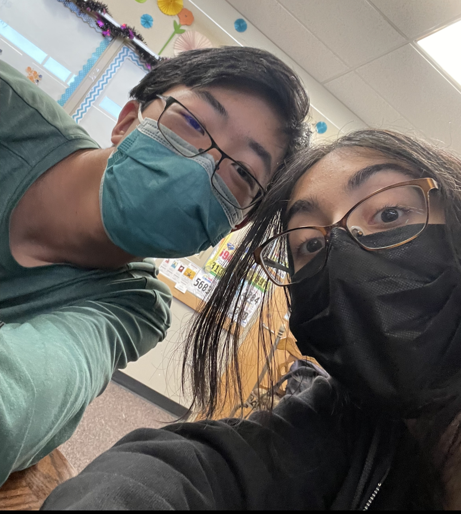

{% extends "layouts/base.html" %}
{% set project = "Brian" %}
{% block body %}
Brian Tang Home Page

Check out some tennis news!
The {{tournaments[0].name}} tournament was played in the city of {{tournaments[0].city}} in the country of {{tournaments[0].country}}. The {{tournaments[0].name}} started on {{tournaments[0].start_date}} and ended on {{tournaments[0].end_date}} and was a part of the {{tournaments[0].season}} season. This tournament was a part of the {{tournaments[0].code}} tour and was played on {{tournaments[0].surface}} surface.
The {{tournaments[1].name}} tournament was played in the city of {{tournaments[1].city}} in {{tournaments[1].country}}. The {{tournaments[1].name}} started on {{tournaments[1].start_date}} and ended on {{tournaments[1].end_date}} and was a part of the {{tournaments[1].season}} season. This tournament was a part of the {{tournaments[1].code}} tour and was played on {{tournaments[1].surface}} surface.